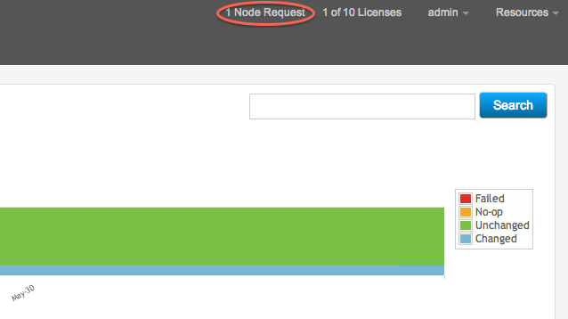

During installation, the agent node contacts the Puppet master and requests a certificate. To add the node to the console and to start managing its configuration, you need to approve its request on the Puppet master. This is most easily done via the console, as follows.
-
From the console, note the pending node requests
indicator in the upper right corner. Click it to load a list of currently
pending node requests.
